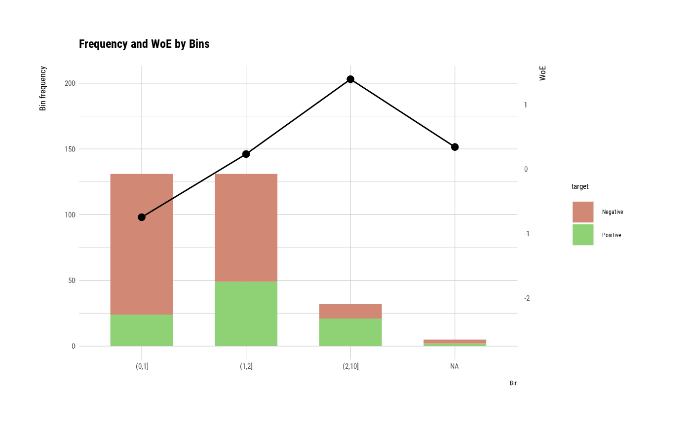
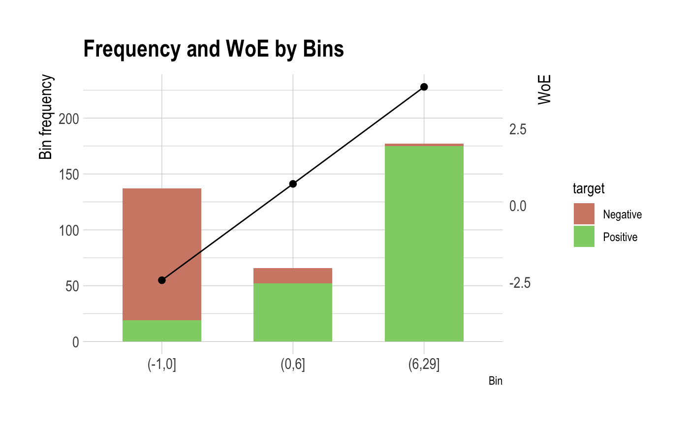
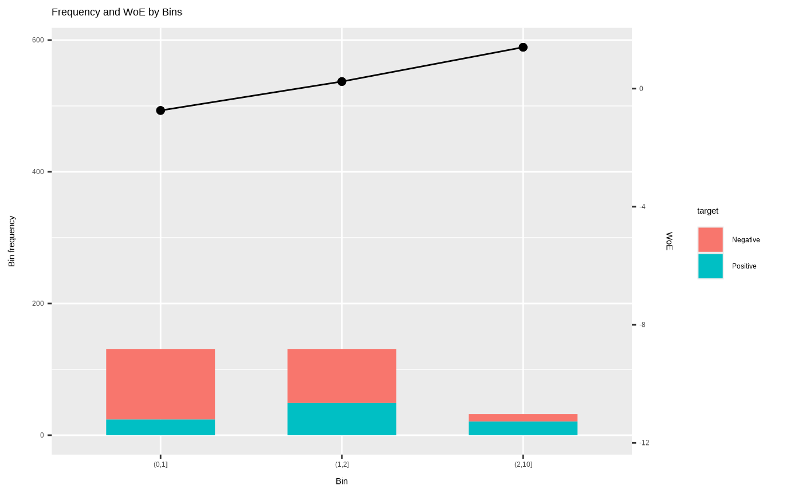

It generates plots for understand frequency, WoE by bins using performance_bin.
# S3 method for performance_bin plot(x, typographic = TRUE, ...)
| x | an object of class "performance_bin", usually, a result of a call to performance_bin(). |
|---|---|
| typographic | logical. Whether to apply focuses on typographic elements to ggplot2 visualization. The default is TRUE. if TRUE provides a base theme that focuses on typographic elements using hrbrthemes package. |
| ... | further arguments to be passed from or to other methods. |
# Generate data for the example heartfailure2 <- heartfailure set.seed(123) heartfailure2[sample(seq(NROW(heartfailure2)), 5), "creatinine"] <- NA # Change the target variable to 0(negative) and 1(positive). heartfailure2$death_event_2 <- ifelse(heartfailure2$death_event %in% "Yes", 1, 0) # Binnig from creatinine to platelets_bin. breaks <- c(0, 1, 2, 10) heartfailure2$creatinine_bin <- cut(heartfailure2$creatinine, breaks) # Diagnose performance binned variable perf <- performance_bin(heartfailure2$death_event_2, heartfailure2$creatinine_bin) perf#> Bin CntRec CntPos CntNeg CntCumPos CntCumNeg RatePos RateNeg RateCumPos #> 1 (0,1] 131 24 107 24 107 0.25000 0.52709 0.25000 #> 2 (1,2] 131 49 82 73 189 0.51042 0.40394 0.76042 #> 3 (2,10] 32 21 11 94 200 0.21875 0.05419 0.97917 #> 4 <NA> 5 2 3 96 203 0.02083 0.01478 1.00000 #> 5 Total 299 96 203 NA NA 1.00000 1.00000 NA #> RateCumNeg Odds LnOdds WoE IV JSD AUC #> 1 0.52709 0.22430 -1.49478 -0.74592 0.20669 0.02525 0.06589 #> 2 0.93103 0.59756 -0.51490 0.23396 0.02491 0.00311 0.20407 #> 3 0.98522 1.90909 0.64663 1.39548 0.22964 0.02658 0.04713 #> 4 1.00000 0.66667 -0.40547 0.34339 0.00208 0.00026 0.01462 #> 5 NA 0.47291 -0.74886 NA 0.46332 0.05520 0.33172summary(perf)#> ── Binning Table ──────────────────────── Several Metrics ── #> Bin CntRec CntPos CntNeg RatePos RateNeg Odds WoE IV JSD #> 1 (0,1] 131 24 107 0.25000 0.52709 0.22430 -0.74592 0.20669 0.02525 #> 2 (1,2] 131 49 82 0.51042 0.40394 0.59756 0.23396 0.02491 0.00311 #> 3 (2,10] 32 21 11 0.21875 0.05419 1.90909 1.39548 0.22964 0.02658 #> 4 <NA> 5 2 3 0.02083 0.01478 0.66667 0.34339 0.00208 0.00026 #> 5 Total 299 96 203 1.00000 1.00000 0.47291 NA 0.46332 0.05520 #> AUC #> 1 0.06589 #> 2 0.20407 #> 3 0.04713 #> 4 0.01462 #> 5 0.33172 #> #> ── General Metrics ───────────────────────────────────────── #> ● Gini index : -0.33657 #> ● IV (Jeffrey) : 0.46332 #> ● JS (Jensen-Shannon) Divergence : 0.0552 #> ● Kolmogorov-Smirnov Statistics : 0.27709 #> ● HHI (Herfindahl-Hirschman Index) : 0.39564 #> ● HHI (normalized) : 0.19419 #> ● Cramer's V : 0.31765 #> #> ── Significance Tests ──────────────────── Chisquare Test ── #> Bin A Bin B statistics p_value #> 1 (0,1] (1,2] 11.86852 0.000570907 #> 2 (1,2] (2,10] 8.35901 0.003837797 #>plot(perf)# Diagnose performance binned variable without NA perf <- performance_bin(heartfailure2$death_event_2, heartfailure2$creatinine_bin, na.rm = TRUE) perf#> Bin CntRec CntPos CntNeg CntCumPos CntCumNeg RatePos RateNeg RateCumPos #> 1 (0,1] 131 24 107 24 107 0.25532 0.535 0.25532 #> 2 (1,2] 131 49 82 73 189 0.52128 0.410 0.77660 #> 3 (2,10] 32 21 11 94 200 0.22340 0.055 1.00000 #> 4 Total 294 94 200 NA NA 1.00000 1.000 NA #> RateCumNeg Odds LnOdds WoE IV JSD AUC #> 1 0.535 0.22430 -1.49478 -0.73975 0.20689 0.02529 0.06830 #> 2 0.945 0.59756 -0.51490 0.24012 0.02672 0.00333 0.21154 #> 3 1.000 1.90909 0.64663 1.40165 0.23604 0.02731 0.04886 #> 4 NA 0.47000 -0.75502 NA 0.46966 0.05592 0.32870summary(perf)#> ── Binning Table ──────────────────────── Several Metrics ── #> Bin CntRec CntPos CntNeg RatePos RateNeg Odds WoE IV JSD #> 1 (0,1] 131 24 107 0.25532 0.535 0.22430 -0.73975 0.20689 0.02529 #> 2 (1,2] 131 49 82 0.52128 0.410 0.59756 0.24012 0.02672 0.00333 #> 3 (2,10] 32 21 11 0.22340 0.055 1.90909 1.40165 0.23604 0.02731 #> 4 Total 294 94 200 1.00000 1.000 0.47000 NA 0.46966 0.05592 #> AUC #> 1 0.06830 #> 2 0.21154 #> 3 0.04886 #> 4 0.32870 #> #> ── General Metrics ───────────────────────────────────────── #> ● Gini index : -0.34261 #> ● IV (Jeffrey) : 0.46966 #> ● JS (Jensen-Shannon) Divergence : 0.05592 #> ● Kolmogorov-Smirnov Statistics : 0.27968 #> ● HHI (Herfindahl-Hirschman Index) : 0.40893 #> ● HHI (normalized) : 0.11339 #> ● Cramer's V : 0.31765 #> #> ── Significance Tests ──────────────────── Chisquare Test ── #> Bin A Bin B statistics p_value #> 1 (0,1] (1,2] 11.86852 0.000570907 #> 2 (1,2] (2,10] 8.35901 0.003837797 #>plot(perf)